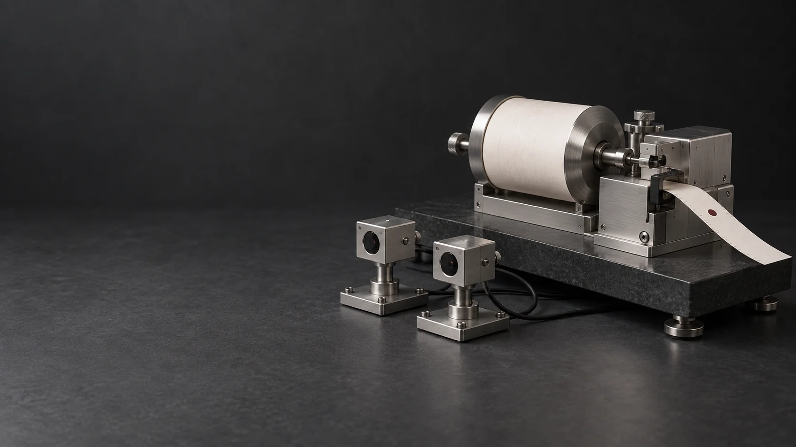

No faster-than-light message
No message is needed to complete the joint standing. Remote choices leave the local probabilities unchanged, so they cannot encode a controllable message in those outcomes.

Entanglement, AMetric co-standing & measurement
Two places.
One joint standing class.
The two measurements are local faces of one joint object. Its compatibility does not need a message to cross the distance between them.
Begin with what they shareJoint compatibility. Local measurements. Persistent records.
01 / Entanglement as joint standing
The Bell paper changes the starting point. In its account of a fixed Bell-nonlocal witness, the two wings are local faces of one joint standing class. Neither local side, by itself, supplies the complete compatibility of the pair. Their joint standing is not assembled afterward by a connector between two independently complete local states.
What “joint standing” means
The pair's complete correlation structure has one determinate identity through its allowed descriptions, comparisons and later reuse. Each local measurement samples a face of that same joint object.
The AMetric point
The paper calls this AMetric co-standing: joint compatibility is admitted before distance, temporal order or propagation speed can act as criteria for its standing.
“Before” is an order of dependence, not an earlier instant. At this level, metric distance and clock time supply no standing authority. There is no metric journey for the joint standing to complete. Spatial separation still describes where the realized measurements take place.
The full compatibility pattern is fixed here.
A restriction of the same joint pattern
A restriction of the same joint pattern
Two nearby views in the drawing. The same joint class fixes their compatibility.
This redraws a fixed witness; it does not move a physical apparatus or model decoherence. The lines show local restrictions, not routes for a signal. The local 50/50 probabilities belong to the Bell example below.
No message is needed to complete the joint standing. Remote choices leave the local probabilities unchanged, so they cannot encode a controllable message in those outcomes.
The joint object supplies compatible context distributions, not pre-existing answers for every unperformed setting. A Bell-local hidden-variable completion cannot reproduce this witness.
Definition 4.39 and Theorem 4.40 give the joint standing class as the same-domain form of a compatible Bell-nonlocal empirical model used as one non-degenerate witness. The two local faces are restrictions of that common object (Definition 5.1).
Definitions 5.2–5.3 call the joint admission of the trace-fixed interfaces and compatibility object AMetric co-standing and boundary co-fixation. Theorem 5.6 and §9 exclude a same-domain standing-transfer or metric-transport component. Metric description comes downstream of this admission; the boundary is not a physical place at which a signal travels infinitely fast.
This is a compatibility and standing result. The manuscript does not derive a physical joint-collapse dynamics outside time. Its governance-class collapse concerns equivalent presentations of the same fixed witness. Actual occurrences and their history laws are addressed separately by the measurement paper.
The hidden-variable exclusion is Bell-local factorization for the fixed witness. Separately declared nonlocal, retrocausal, superdeterministic or otherwise enriched theories require their own wider-domain analysis (§7, especially Corollary 7.5). The result does not silently exclude every possible ontology.
Read the Bell paper's joint-standing argumentSee the joint pattern
Each separated station chooses between two settings and records + or −. Change the settings below. The joint pattern depends on both choices; each station's local totals stay fixed.
Station A
50% +50% −
Local totals, for either remote settingStation B
50% +50% −
Local totals, for either remote settingFor A0 with B0, matching signs have total probability 26/32. Neither station's 50/50 local total changes.
Exact probability table from the entanglement paper, §10.2. Fractions describe a distribution, not a claim that every 32 trials produces those counts. The bars share a 0–½ scale.
A pre-written answer for every setting would be a Bell-local explanation. Across all four setting pairs, this example gives a Bell score of 2.5. Any such local answer-sheet model, including mixtures of answer sheets, is bounded by 2.
Yet changing the remote setting still cannot encode a message in the local totals. The correlation is visible in the joint record; it is not a travelling instruction from one station to the other.
Local restrictions fit together.
A global local answer sheet does not.
Three contexts have probabilities (13, 3, 3, 13)/32; the A1–B1 context has (3, 13, 13, 3)/32. Thus E00 = E01 = E10 = 20/32 and E11 = −20/32. The CHSH expression is E00 + E01 + E10 − E11 = 80/32 = 2.5. Each marginal is ½.
In the entanglement manuscript, local distributions are restrictions of one reusable empirical witness. Overlap agreement does not supply a global assignment of predetermined values for every setting. The target-active boundary form is derived for a fixed finite Bell-nonlocal, no-signaling witness; within a finite-dimensional bipartite tensor-product realization by local POVMs, Bell nonlocality forces the realizing state to be entangled (§§4–5, Theorem 11.3 and Corollary 11.6).
Local measurement samples the preparation-level witness; it does not retrospectively create or repair it. Subsequent physical states and future correlations can change. AMetric priority here is logical, not a hidden wall, earlier clock time or signal route (§§6, 8–9).
The published finite Lean arithmetic example has a declared denominator-32 scope. It is not a claim that every manuscript theorem, quantum specialization or continuum result has been mechanized.
Read the entanglement argument02 / From joint compatibility to a physical measurement
Quantum theory predicts how a source and a detector become correlated. For a superposed input, that description retains more than one possible reading. Explaining an experiment therefore means more than drawing a pointer: what interacts, what stores the result, how long it lasts, and which event belongs to this particular run?
The new paper constructs receivers on an interacting quantum source and develops a separate, explicit six-mode circuit for detector calculations. The source has its own dynamics; it is not merely a label attached to a possible answer.
The physical route is source → receiver → conversion and material flag → spin seed and amplifier → scheduled reading and quiet storage.
What the new paper adds
A connected account of physical sources, finite detectors, amplification, retention, probabilities and actual events, with the assumptions at each handoff kept visible.
Quantum Measurement under AASC §§2–10 develops two specified physical targets: informative receivers on an interacting regulated source, and a six-mode cosine circuit with pumps, losses and distinguishable outputs. The detector calculation is not silently identified with every intervention on the regulated source or with its continuum realization.
The complete monitored detector is compared over its full 35.587 ms interval with a bound of 0.063241 in restricted diamond norm. That is a proved physical-model comparison, not an experimental calibration. The final composition retains additional source, control, reader and storage errors in an explicit residual ledger (§15).
The Kernel roles govern determinate carriers and record incidences necessarily. They do not substitute for calculating a coupling, establishing a physical handoff, or supplying an actual-event law (§1.1).
Read the unified measurement paper03 / A small seed, a lasting record
A click on a display and a physical memory are different parts of a detector. The display can miss a signal. It can also register a false count. A complete account follows both the display and the material carrier.
In the paper's finite amplifier, a seed acts on a prepared group of 32 spins. Controlled thermal interactions shift the distribution toward a readable band. Between the two bands, the memory is still unreadable.
Move the step control. You are changing how long the amplifier runs before its scheduled reading. Every possible band remains in the calculation, including the wrong band and the unreadable middle.
The upper seed drives the memory toward the upper band. Reading too early leaves more unreadable results.
Model probabilities evaluated from §9, not a sample of actual events or measured device performance. Each distribution sums to 100%. The chart's vertical scale follows its tallest bar.
A click and a record can disagree
These are possible statuses of different detector components. Discarding blanks and errors would change what the reported success rate means.
An illustrative matched record: flag 0 seeds the upper band in this apparatus. These examples assign no frequencies.
The chart evaluates the 33-state transition matrix in §9, equation (100), starting with 16 up spins. It uses ordinary browser arithmetic. The manuscript separately certifies the 1,024-step correct-band probability between 0.99992352423742848 and 0.99992352423742849 by outward-rounded interval arithmetic (Proposition 9.1).
This is a scheduled endpoint reading. Under the same dynamics, the probability that the first reached band is correct is about 99.4167%. The much higher endpoint figure cannot be presented as irreversible first-display success.
For the subsequent 100 ms quiet hold, the thermal collisions are switched off. Under the stated per-spin hazard and population assumptions, conditional survival throughout that hold is at least 0.9999999794474568 (Proposition 9.2). Other faults require their own bounds.
The approximately 99.992% amplifier result is conditional on a supplied seed. The combined detector, display and material success is about 92.6–92.7% at the paper's specified comparison-model operating point. The remaining physical error ledger is not assigned zero.
04 / What belongs to this run?
A complete quantum instrument describes every allowed output, its weight, and the corresponding conditional state. A durable memory explains how a reading can remain available. Identifying one exclusive history as the actual history of the original run is a further physical commitment.
The paper also proves a positive probability result: for an actual readout, density-operator dependence, consistency under classical mixing and exact calibration uniquely fix the familiar quantum probabilities—the Born weights. The actual-history input remains explicit.
The full instrument retains resolved outputs, blanks and failures, with their probabilities and conditional states.
Complete quantum descriptionA material carrier acquires distinguishable content and preserves it long enough for later use.
Physical acquisition and retentionAn actual-history law identifies which occurrences belong to this run and how their probabilities arise.
Explicit additional physical inputA record must remain about the same occurrence when it is copied, compared or used as evidence. A changed label cannot quietly change what the evidence refers to.
Admissible Record Construction establishes the necessary role structure for that determinate record use. Its non-selective description does not secretly choose one fine record. The new paper adds the material construction and makes the actual-history obligation explicit.
Preserving the identity
of a record is not the same task
as selecting an event.
The unified paper's Theorem 13.3 constructs a coherent instrument dilation, its record-dephased comparison, and a single-event completion. They agree on the declared record-compatible observable algebra. The same theorem exhibits coherent observations outside that algebra that distinguish the coherent and dephased accounts.
REG in §13.1 explicitly includes actual occurrence and original-run exclusivity. Proposition 13.2 exposes it as a definite-value premise, not a derivation of definite values from a mixed state. The later source-reader and bounded counting-law constructions identify preparation, filtration, history and rate commitments where used; they do not make those inputs disappear.
The calibrated affine probability theorem (§11) also retains its actual-readout, density-operator, mixture-consistency and calibration premises. A numerical weight inside an instrument does not by itself establish that weight as the frequency law of actual original-run events.
Three detector responses can have exactly the same error on definite inputs while responding differently to a coherent superposition. Move the calibration error below. The example is equation (123), not an error forecast for the constructed apparatus.
A 1% error on definite inputs alone does not certify 1% accuracy on coherent inputs. The general bound here is 10 percentage points.
For the stated binary effects, p± = ½ ± √(ε(1−ε)). Theorem 12.1 gives the sharp uniform bound √ε; the stronger bound ε requires a response commuting with the target projection. Finite tests of one vector do not establish uniform calibration over a larger sector.
One connected account
The Bell paper establishes the common compatibility object. The record paper establishes what it takes to reuse determinate evidence. The unified measurement paper constructs physical acquisition, amplification and retention, with the actual-history inputs stated explicitly.
Read the research
Establishes one joint standing class whose local faces carry the fixed Bell witness. AMetric co-standing admits the common compatibility before metric distance or temporal order can supply standing authority, without a later communication channel or Bell-local hidden-variable completion.
Fixed finite Bell-nonlocal, no-signaling witnesses with declared reuse and comparison structure; quantum specialization for finite-dimensional bipartite tensor-product realizations with local POVMs. The denominator-32 finite arithmetic certificate has its own bounded scope.
Establishes the necessary role structure for a record to remain the same determinate evidence through retention, comparison and reuse. Shows why a non-selective description does not itself choose one fine record.
Fixed-domain record-role determinacy, quotient and boundary-trace normal forms, and a finite non-selector audit. Does not add collapse dynamics or prove actual physical branch selection.
A connected construction of physical quantum sources and receivers, complete detector instruments, finite amplification, persistent records, calibrated probability laws and compatible actual histories. The physical and probability results retain their source comparisons, apparatus errors and explicit actual-history commitments.
Constructed receivers and registration circuits; a complete detector comparison over 35.587 ms; finite amplification and conditional quiet-hold retention; calibrated affine probability uniqueness; coherent calibration limits; adaptive and local-instrument compatibility. A unique actual history requires the explicit occurrence/history law and its physical inputs; outstanding apparatus errors remain in the residual ledger.
The interactive amplifier and calibration example use the unified measurement manuscript. The joint probability table comes from the entanglement manuscript. These are transparent illustrations of specified models and arguments; the paper sections state the physical assumptions and exact result boundaries.